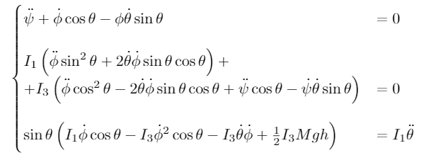

Below are some of my physics talks, side-projects, and papers.
Coriolis and Centrifugal Forces
The motion in the reference frame of a mass given some initial velocity on a frictionless, flat, surface rotating at ω = 1 rad/s, solved numerically. The Coriolis and centrifugal forces are "fictitious" since they arise from applying Newton's laws to a non-inertial frame; in the inertial frame, the mass will travel in a straight line. The equations of motion and numerical solution for three different initial velocities are shown below.
Since ω points in the z-direction, the above can be reduced to


Symmetric Top in Gravity
The motion of a symmetric top (I1 = I2 ≠ I3) of mass M (center of mass at height h) with tip fixed in gravity g solved using Euler angles and the Lagrangian formulation, assuming there is no acceleration in the ψ direction. The Lagrangian, equations of motion, and numerical solution are shown below.
Classical Particle in a Cone
The motion of a particle subject to gravity g inside of a cone of opening angle α, solved using the Lagrangian formulation. The equations of motion and numerical solution are shown below.

Cycloid Motion
The motion of a charged particle subject to perpendicular uniform electric and magnetic fields E = Ez and B = Bx, solved numerically. Amazingly, the particle's average trajectory lies perpendicular to both the electric and magnetic fields.

Ballistic Entry: Monte Carlo Simulation
Musical Astronomy: Graduate Students of Physics talk (fall 2018)
Numerical Solutions to the Stellar Structure Equations
These solutions are not normalized but can be solved for the boundary conditions of any main-sequence star.


PHYS 3380 project on the Solar Analema
IntelliChoice 2020 Math Camp
Recorded lecture can be found here.